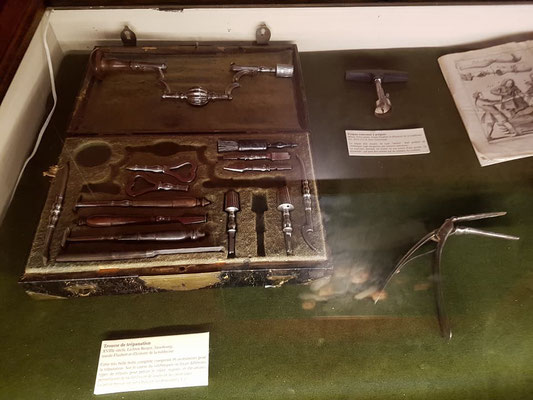

Cette trousse-carquois portée en bandoulière permettait une intervention rapide du chirurgien qui se déplaçait à cheval sur les champs de bataille. Il ne subsiste que trois instruments, mais quinze environ pouvaient être rangés à l'intérieur. 1er Empire, vers 1810.

Trousse de trépanation, XVIIIème siècle.